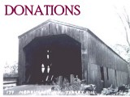

|
  

|
(What
we wish we had):
-
More
Volunteers
-
Museum-historical
society specific software (est. $800+)
-
display
cases with
lighting in them, for showcasing our
collection of wonderful artifacts
-
metal
file cabinets,
either two or four drawers
-
a
local appraiser to
volunteer his/her time to appraise our collection
-
Easels
to use in
displaying items
|
|
 |
 |
Volunteers are always needed
and welcomed at the
Merrimack Historical Society.
|
Volunteer activities
include:
- serving on our society's governing board
- helping when we are open to the public and at society events
- organizing files, books, and collections
- look-ups (responding to research requests)
- assisting with exhibit design and organization
Requirements for volunteers:
- you should be 18 years of age (younger volunteers are accepted
if their parent or guardian is also present)
- you should have an interest and interest and enthusiasm for
Merrimack--its history, (yesterday, today and tomorrow).
|
 |
|  |
Consider making a gift to the
Merrimack Historical Society.
|
The Merrimack
Historical Society is a non-profit, volunteer-driven organization.
We do, however have expenses. Our "historic" (which
means "quaint, but often needing maintenance") schoolhouse
aka historical society building requires on-going repairs and
upgrades. Our artifacts are often preserved in an acid-free environment
that incurs a cost. In addition, we often see artifacts and documents
for sale, relating to Merrimack's history and people, and would
like to be able to purchase them.
Please consider making a donation of your time, talent or
a monetary gift.
To make a monetary donation, please send a check (a money
order, or cash will be accepted also), made payable to "Merrimack
Historical Society," and mailed to:
Merrimack Historical Society
PO Box 1525
Merrimack, New Hampshire 03054
Recognition Levels at the Merrimack Historical Society
Friends $0-99
Partners $100-$299
Benefactors $300-$499
Builders $500-$999
Founders $1000-$4999
President's Society $5,000+
Granite Society $15,000+
Do
your ancestors come from Merrimack? There is no better way
to honor your ancestors, than by making a gift to honor their
memory, and at the same time preserving Merrimack's historic treasures!
Gifts may be made on behalf of yourself, or to honor a living
individual (or a group), and also to honor the memory of a loved
one or family. Every gift is gratefully acknowledged.
We are also
grateful when we receive items and artifacts of historic
importance to Merrimack, New Hampshire, to add to our collection.
These items might include (but are not limited to):
- photographs, albums, documents, pamphlets, and advertising, relating
to Merrimack history, including letters and diaries
[SEE a list of specific
photographs that we are seeking in 2013]
- published genealogies or town history books of Merrimack, surrounding
areas, and New Hampshire
- antique furniture pieces, household and industrial objects
- Native American artifacts (locally collected)
- African-American, and culturally diverse artifacts and documents,
from the early days of Merrimack
- films and videotapes; sound recordings
- corporate,
organizational, institutional and personal archives
- early costumes and textiles, including embroidered or cross-stitched
creations
- prints, paintings and sculpture
- antique toys
- other Merrimack memorabilia
WHERE WILL YOUR COLLECTIBLES GO?
You may be an avid collector, and have found great pleasure, in
collecting, art, quilts, or any other number of items from Merrimack's
past. Your collection, years in the making, fills you with a feeling
of pride, and satisfaction. You may be planning to pass your collection
to your child or grandchild, or you may be looking for other options.
If so, have you considered giving your collectibles now, or through
your will, to the Merrimack Historical Society? A gift to the society
will benefit generations to come, and many will benefit and learn
from your "treasures."
To make a donation of an object, artifact, document, or collection,
please contact our president, by telephone
or mail, on our contact page.
|
|
|
|
|
 |
|